點各章標題旁的 ▶ 按鈕可直接跳到影片對應位置。本片是 SA-2025-1 完整解題片的姊妹觀念短片，不重講矩陣組裝。
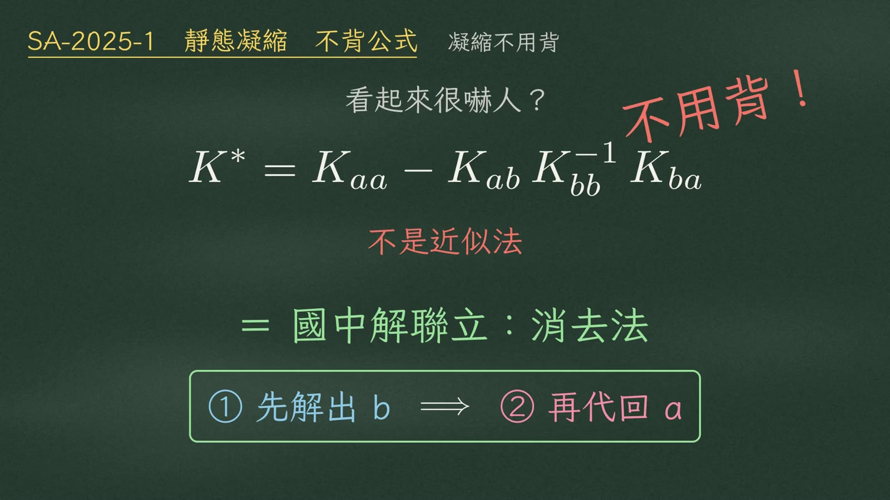
靜態凝縮的公式
$$K^*=K_{aa}-K_{ab}\,K_{bb}^{-1}\,K_{ba}$$看起來很嚇人。但它不是近似法，也不用背。它就是國中解聯立方程式的消去法：先把一個未知數解出來，再代回去。今天就用這個邏輯，十秒鐘自己把公式寫出來。
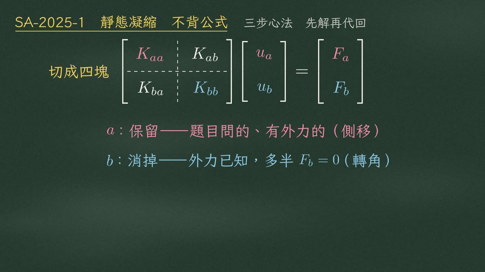
先把自由度分成兩組：
| 分組 | 角色 | 特徵 | 通常是 |
|---|---|---|---|
| a | 要保留的 | 題目問的、有外力的 | 側移 |
| b | 要消掉的 | 外力已知，多半是 \(F_b=0\) | 節點轉角 |
勁度矩陣就跟著切成四塊：
$$\begin{bmatrix}\color{#d0607a}{K_{aa}} & K_{ab}\\ K_{ba} & \color{#3a7fc0}{K_{bb}}\end{bmatrix}\begin{Bmatrix}\color{#d0607a}{u_a}\\ \color{#3a7fc0}{u_b}\end{Bmatrix}=\begin{Bmatrix}\color{#d0607a}{F_a}\\ \color{#3a7fc0}{F_b}\end{Bmatrix}$$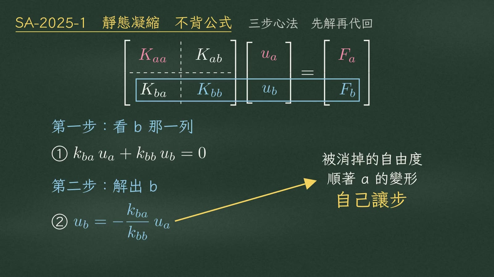
第一步，看 b 的那一列。b 上沒有外力，所以
$$①\quad k_{ba}\,u_a+k_{bb}\,u_b=0$$第二步，把 \(u_b\) 解出來：
$$②\quad \color{#3a7fc0}{u_b=-\frac{k_{ba}}{k_{bb}}\,u_a}$$物理意義是：被消掉的自由度，會順著 a 的變形，自己讓步。
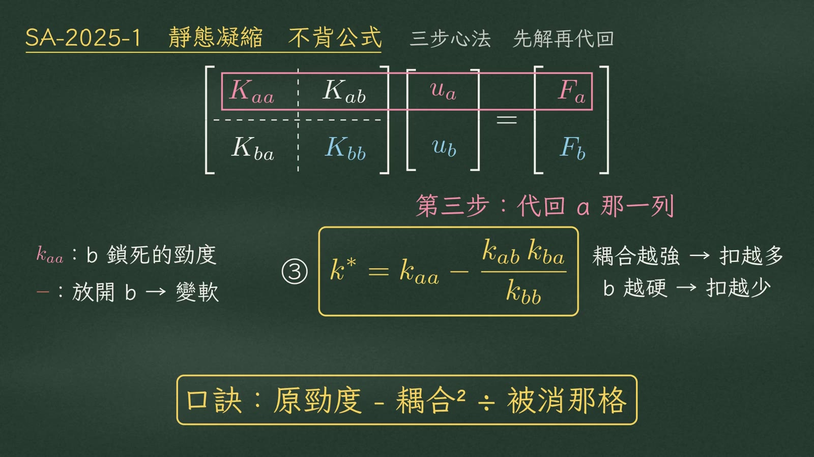
第三步，代回 a 的那一列：
$$③\quad k^*=k_{aa}-\frac{k_{ab}\,k_{ba}}{k_{bb}}$$| 項 | 意義 |
|---|---|
| \(k_{aa}\) | b 被鎖死時的勁度 |
| 減號 | 放開 b，它會讓步，勁度只會變小 |
| \(k_{ab}k_{ba}\) | 耦合越強 → 扣越多 |
| \(k_{bb}\) | b 自己越硬 → 扣越少 |
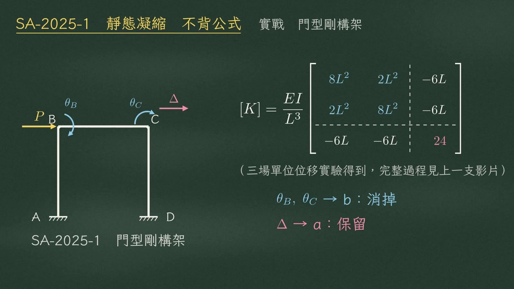
實戰看 SA-2025-1，門型剛構架求側向勁度。勁度矩陣由三場單位位移實驗得到，完整過程請看上一支影片：
$$[K]=\frac{EI}{L^3}\begin{bmatrix}\color{#3a7fc0}{8L^2} & \color{#3a7fc0}{2L^2} & -6L\\ \color{#3a7fc0}{2L^2} & \color{#3a7fc0}{8L^2} & -6L\\ -6L & -6L & \color{#d0607a}{24}\end{bmatrix}$$分組：兩個轉角 \(\theta_B,\theta_C\) 是 b，要消掉；側移 \(\Delta\) 是 a，要保留。
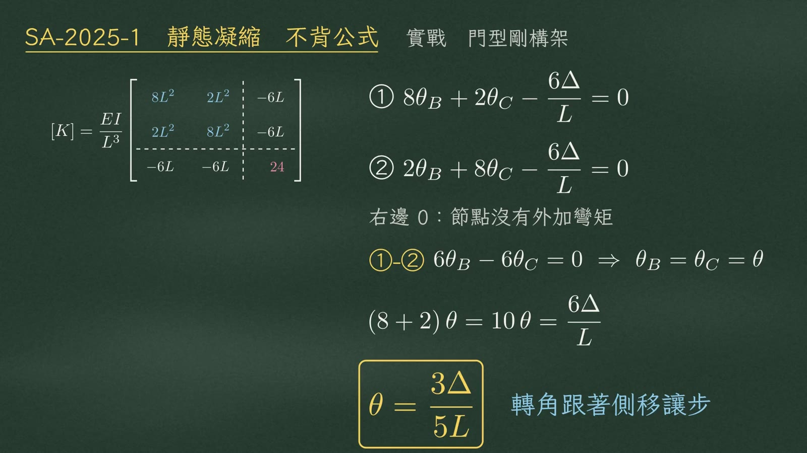
先解。第一列和第二列右邊都是零，因為節點沒有外加彎矩：
$$①\;\;8\theta_B+2\theta_C-\frac{6\Delta}{L}=0\qquad ②\;\;2\theta_B+8\theta_C-\frac{6\Delta}{L}=0$$兩式相減：\(6\theta_B-6\theta_C=0\Rightarrow\theta_B=\theta_C=\theta\)。代回第一列，八加二：
$$(8+2)\,\theta=10\,\theta=\frac{6\Delta}{L}\quad\Longrightarrow\quad \boxed{\theta=\frac{3\Delta}{5L}}$$轉角就這樣跟著側移讓步。
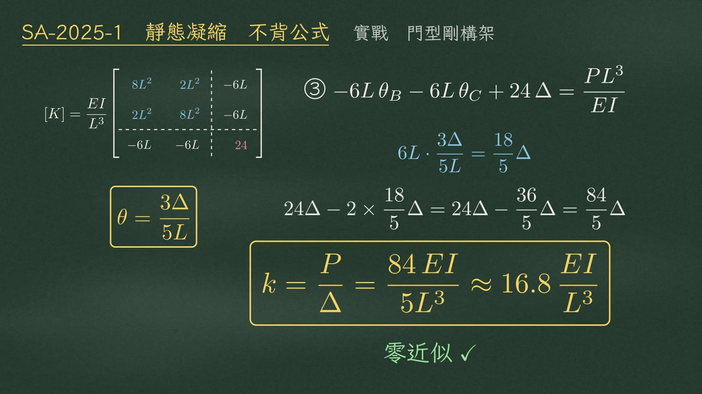
再代回第三列：
$$③\quad -6L\,\theta_B-6L\,\theta_C+24\,\Delta=\frac{PL^3}{EI}$$每根柱扣掉 \(6L\cdot\dfrac{3\Delta}{5L}=\dfrac{18}{5}\Delta\)，兩根一共 \(\dfrac{36}{5}\Delta\)：
$$24\Delta-2\times\frac{18}{5}\Delta=24\Delta-\frac{36}{5}\Delta=\frac{84}{5}\Delta$$ $$\boxed{k=\frac{P}{\Delta}=\frac{84\,EI}{5L^3}\approx 16.8\,\frac{EI}{L^3}}$$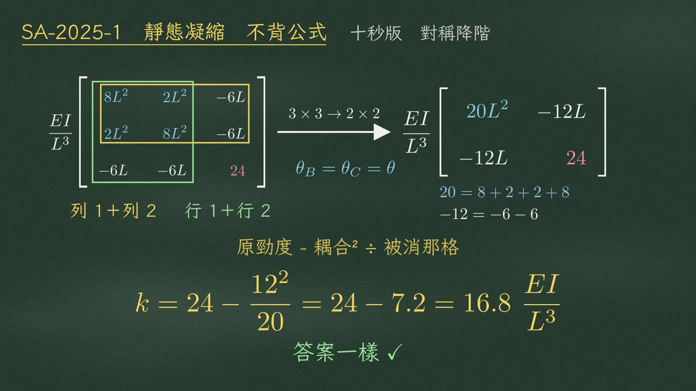
還有更快的十秒版。既然兩個轉角相等（\(\theta_B=\theta_C=\theta\)），就合併成一個 \(\theta\)：第一、二列相加，第一、二行也相加，3×3 變成 2×2：
$$\frac{EI}{L^3}\begin{bmatrix}20L^2 & -12L\\ -12L & 24\end{bmatrix}\qquad\begin{aligned}20&=8+2+2+8\\ -12&=-6-6\end{aligned}$$主對角是 20 和 24，耦合項是 −12。套口訣：
$$k=24-\frac{12^2}{20}=24-7.2=16.8\,\frac{EI}{L^3}$$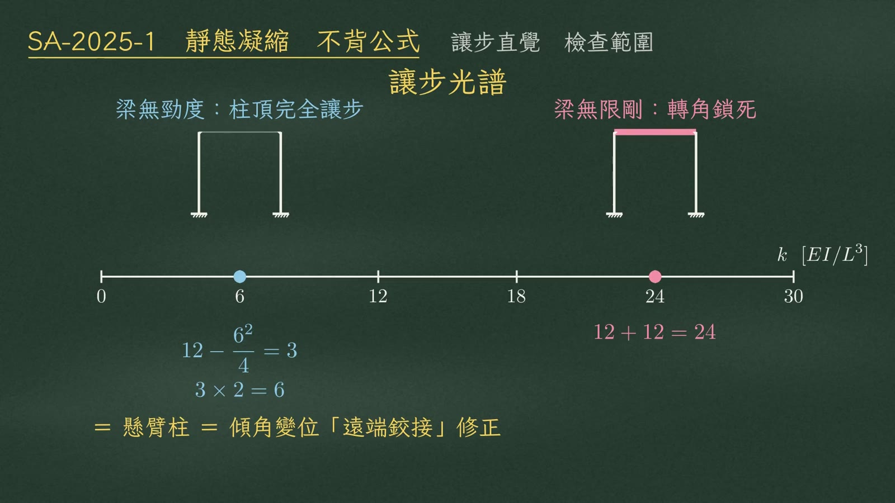
最後用讓步的直覺檢查範圍（單位 \(EI/L^3\)）：
| 極端 | 柱頂行為 | 每根柱 | 兩根合計 |
|---|---|---|---|
| 梁無限剛 | 轉角完全鎖死、不讓步 → 雙固定柱 | \(12\) | \(12+12=24\) |
| 梁完全沒有勁度 | 柱頂完全讓步 → 懸臂柱 | \(12-\dfrac{6^2}{4}=3\) | \(3\times2=6\) |
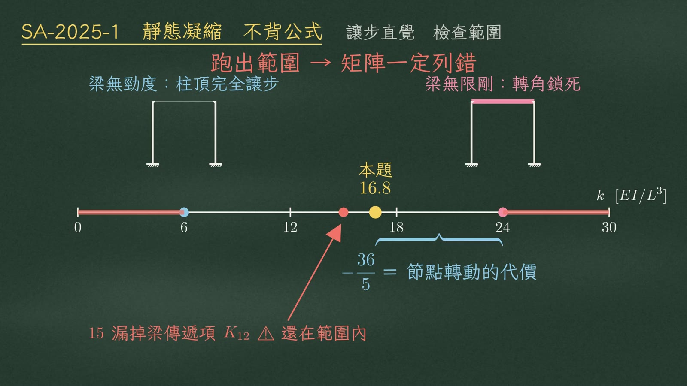
本題 16.8，落在 6 和 24 之間；扣掉的 \(\dfrac{36}{5}\)，就是允許節點轉動的代價。
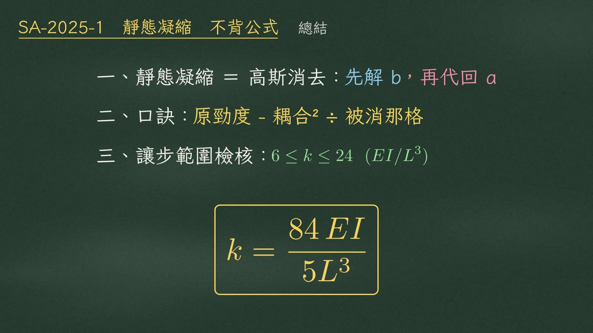
| # | 重點 |
|---|---|
| 一 | 靜態凝縮就是高斯消去：先解出 b，再代回 a |
| 二 | 口訣：原勁度 − 耦合² ÷ 被消那格 |
| 三 | 用讓步範圍檢核：本題答案一定在 \(6\le k\le 24\;(EI/L^3)\) |
來源：解題過程影片/SA-U2-4-7 靜態凝縮/video/ 之 SA-2025-1-凝縮.mp4、segments.py（逐字旁白）、SA-2025-1-凝縮.srt；例題數值對照 HANDOFF.md 已驗算數字並複算（θ＝3Δ/5L、k＝84/5、對稱降階 16.8、範圍 6／24、漏 K12 得 15）。黑板截圖取自各段結束前 0.5 秒。